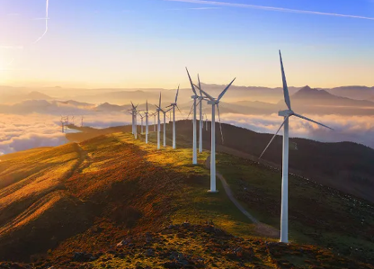
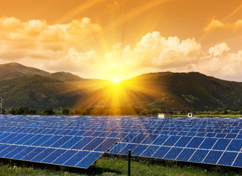
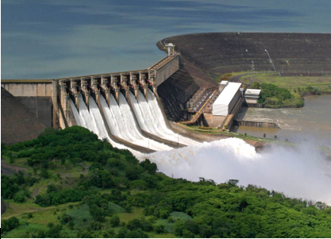
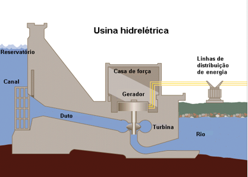
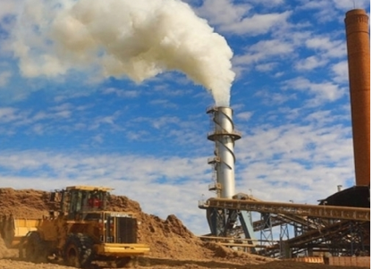
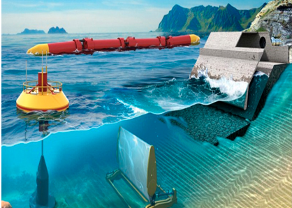
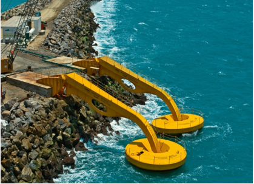
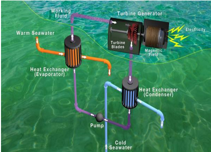
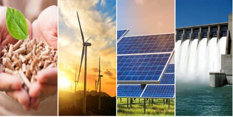

Como já vimos anteriormente, energia renovável é uma energia limpa e inesgotável, ou seja, se renova. Logo, energia não renovável consiste em toda fonte de energia que pode acabar e que causa grandes estragos ambientais, principalmente, na atmosfera do nosso planeta. Para entendermos melhor a diferença entre ambas e qual é a melhor para se usar, precisamos saber quais as fontes de energia renovável que nosso país possui e quais as fontes de energia não renovável utilizadas.

Energia Eólica: é a transformação da força das massas de ar em movimento (ventos) em energia elétrica por meio de turbinas eólicas (aerogeradores). Para fazer isso, as hélices são montadas no topo de uma torre alta que gira de acordo com a força do vento para converter a força motriz das turbinas em eletricidade. Os geradores eólicos são produzidos nos mais diversos tamanhos, indo desde alguns poucos watts de potência até grandes aerogeradores que produzem megawatts de energia. A energia eólica é gerada em áreas abertas, varrendo o vento, movimentando grandes hélices para gerar eletricidade de forma limpa e infindável. No Brasil, a capacidade instalada de energia eólica cresce cada vez mais, especialmente na região Nordeste, sendo considerada a segunda fonte de energia renovável mais utilizada na matriz elétrica do país

Energia solar: Radiação gerada a partir de painéis fotovoltaicos expostos ao sol para captar a corrente captada. As células fotovoltaicas são constituídas por, pelo menos, duas camadas de um semicondutor, normalmente o silício. A camada superior é do tipo-N, de carga negativa, e a camada inferior é do tipo-P, de carga positiva. Quando os fótons de luz de energia suficiente atingem a célula solar, eles energizam os elétrons livres da camada tipo-N, que migram para a camada tipo-P, criando uma corrente elétrica contínua. Essa energia gerada pelas células solares é captada pelo circuito interno do módulo fotovoltaico e direcionada para o inversor solar, que modifica o tipo de sua corrente, de corrente contínua (CC) para corrente alternada (CA).Podemos utilizar esse recurso por meio da energia solar térmica. No Brasil, a maior parte das instalações de energia solar térmica são feitas em residências para o aquecimento de água, substituindo o uso de chuveiros elétricos, onde um sistema térmico solar capta o calor da radiação do sol por meio de painéis chamados de coletores solares térmicos, esse calor aquece a água que é armazenada em um reservatório térmico (acumulador solar ou boiler) para uso posterior. Quanto maior a radiação solar, maior a energia produzida.

Energia Hidráulica: gerada pela força e movimento das águas do rio, é a forma de energia mais utilizada no Brasil (cerca de 60% da matriz elétrica do país) e possui a tecnologia mais madura e difundida entre as fontes de energia renovável. A energia potencial da água em movimento, que também pode ser acumulada no reservatório da hidrelétrica, é captada por turbinas e geradores que transformam a energia mecânica em elétrica. Além de gerar energia, a água acumulada nos reservatórios pode ser utilizada para o abastecimento de cidades ou na irrigação das lavouras. Embora a energia hídrica permita gerar eletricidade sem a emissão de gases poluentes, a construção dos reservatórios das hidrelétricas apresenta sérios impactos ambientais devido ao alagamento de grandes áreas que destroem a fauna e flora local, além de causar o deslocamento de comunidades ribeirinhas. O custo extra com essas usinas térmicas é repassado aos consumidores por meio das bandeiras tarifárias aplicadas na conta de luz.


Energia da biomassa: é uma fonte renovável utilizada para a produção de calor e eletricidade por meio da queima direta de materiais orgânicos em usinas termoelétricas, ação que gera calor para aquecer água e produzir biocombustíveis, como o etanol. A queima desses materiais, produzir vapor em alta pressão que alimenta as turbinas e geradores elétricos. Atualmente, a madeira ainda é a matéria orgânica mais utilizada para a geração de energia biomassa, mas também está sendo utilizado bagaço de cana-de-açúcar, resíduos agrícolas, algas, restos de alimentos, gás metano de aterros ou mesmo excremento animal. Mesmo que seu processo para gerar energia seja parecido com a queima de combustíveis fósseis, na queima de materiais orgânicos não é eliminado gás metano e essa queima produza gases CO2, estes são absorvidos pela fotossíntese das plantas durante o seu crescimento.

A energia oceânica: é a energia renovável provinda do mar e pode ser produzida a partir da captação das correntes marítimas e das marés (energia maremotriz), do movimento das ondas (energia ondomotriz) ou da temperatura das águas (energia térmica oceânica).


Energia térmica oceânica: utiliza o diferencial de temperatura (mínimo de 20° C) entre a água quente da superfície e a água fria do fundo do oceano para alimentar um sistema de criação de vapor com turbinas para a geração de eletricidade. Nesse sistema, um vaporizador utiliza o calor das águas superficiais para aquecer um fluído e gerar o vapor que irá alimentar as turbinas para a geração de energia elétrica. Depois, o vapor chega a um condensador que utiliza a água fria do fundo do mar para esfriá-lo de volta ao estado líquido, que será reutilizado em um novo ciclo.
Tanto em questão ambiental quanto econômico, as energias sustentáveis são a melhor opção, visto que oferecem benefícios substanciais para o clima, saúde e economia do nosso território. Sobre as formas de energia sustentáveis abordadas acima, podemos destacar vários benefícios em comum, como:
• Baixo impacto ambiental;
• Fonte de energia limpa e renovável;
• Gera empregos;
• É encontrada de forma abundante;
• A maioria de seus geradores, possui alta durabilidade;
• Valoriza a sua casa ou marca de sua empresa;
• Permite que você se torne independente energeticamente.

Analisando tudo o que foi apresentado até o momento, é possível concluir que diversificando a matriz energética, ou seja, combinando as formas de energias sustentáveis umas com as outras é o melhor caminho visto que “se investirmos mais em energia solar e eólica podemos aproveitar períodos de secas, que interferem na geração de energia hídrica, para gerar a nossa energia com o sol ou o vento e economizar água” (Blog, Portal Solar). Assim, seria possível equilibrar a balança energética brasileira minimizando e/ou até mesmo acabando com os problemas de secas nos reservatórios e altos valores nas contas de energia. Por exemplo: se o potencial da energia solar fosse todo aproveitado, seria suficiente para gerar mais de 10 vezes a energia que é consumida no país, e como esta fonte de energia sustentável é renovada anualmente, teríamos energia para sempre.